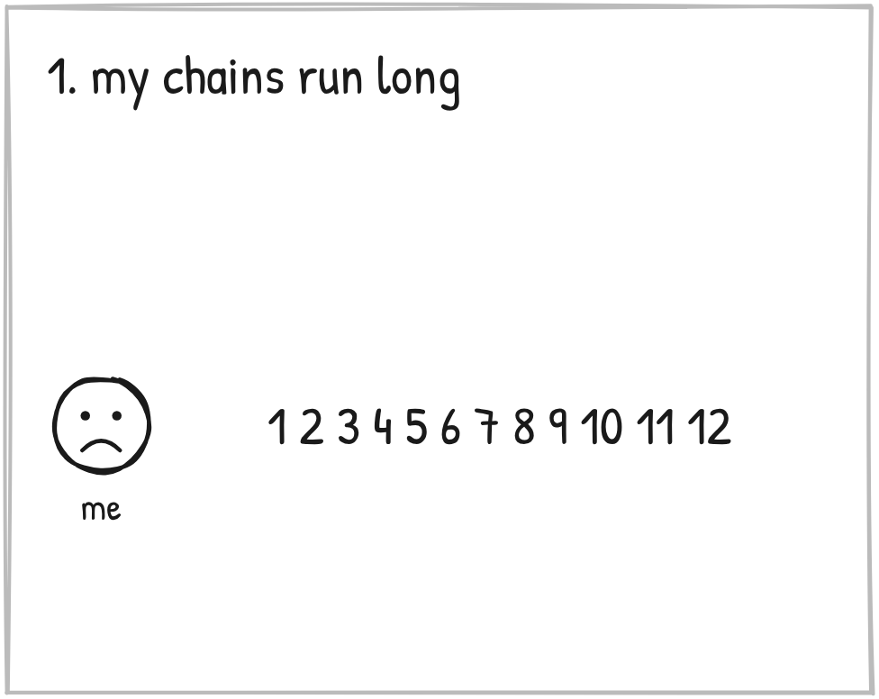
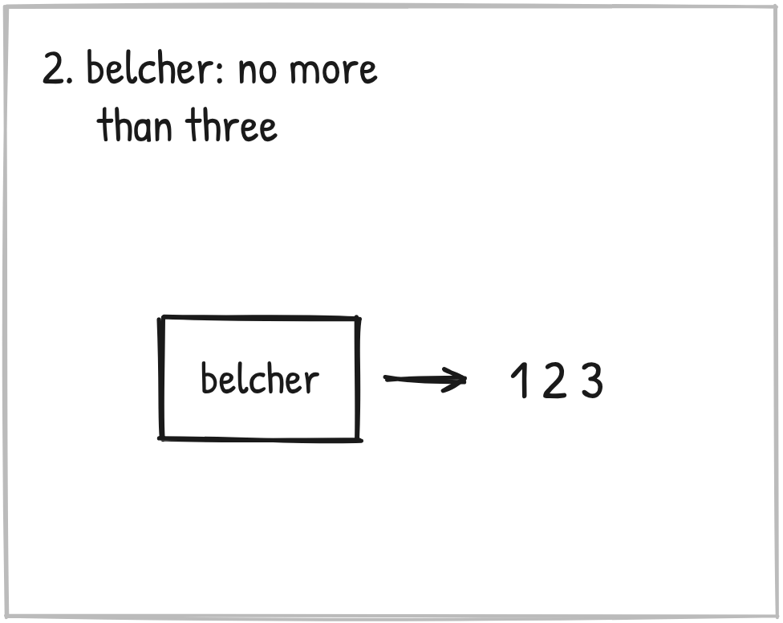
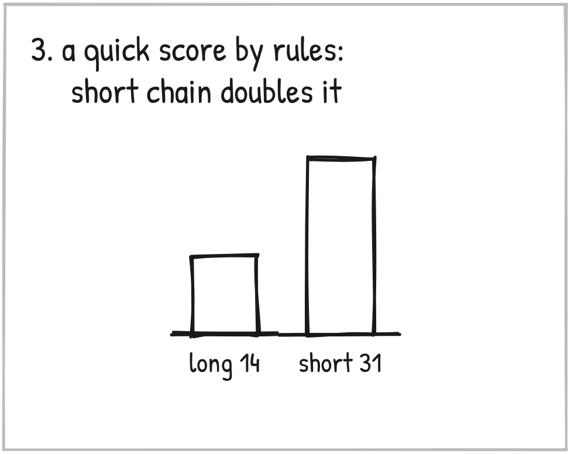
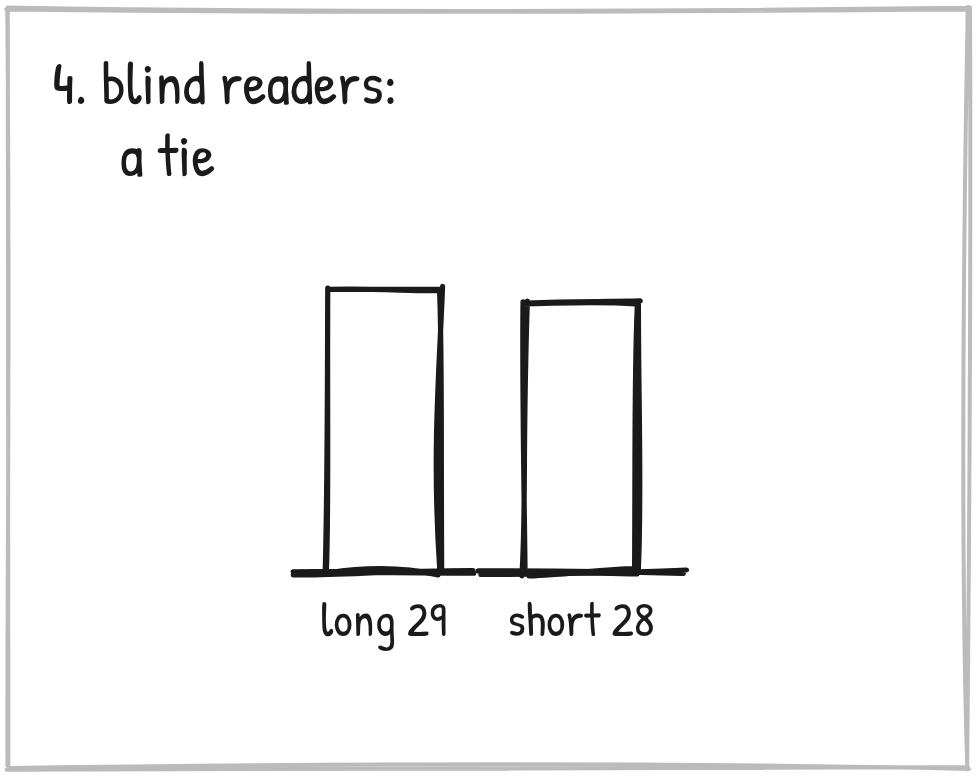
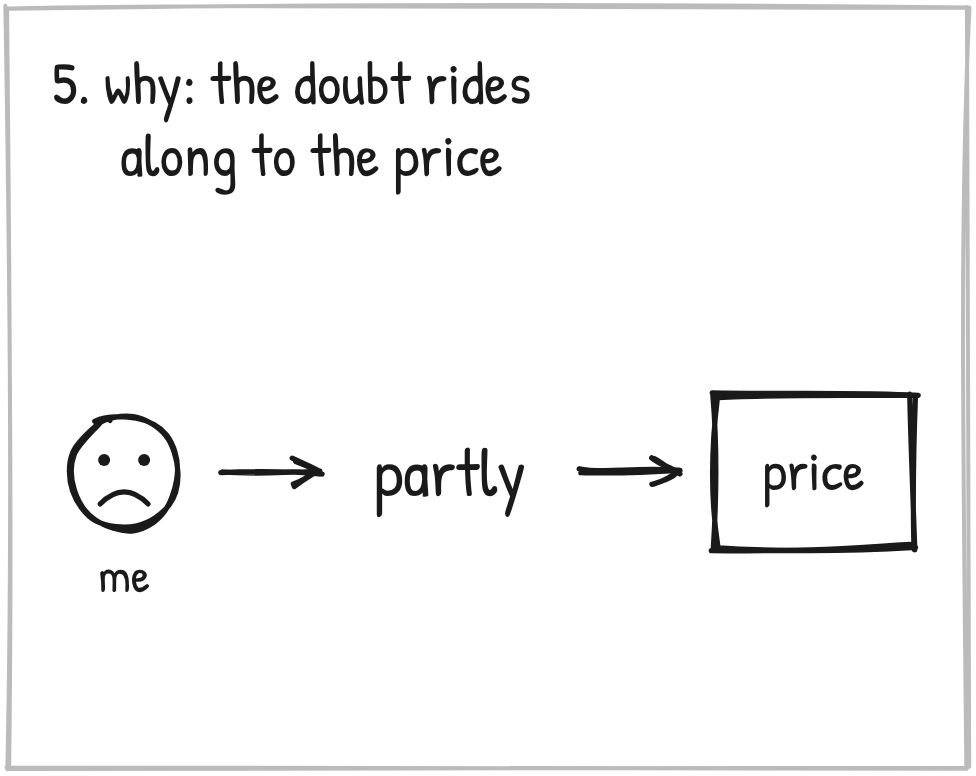
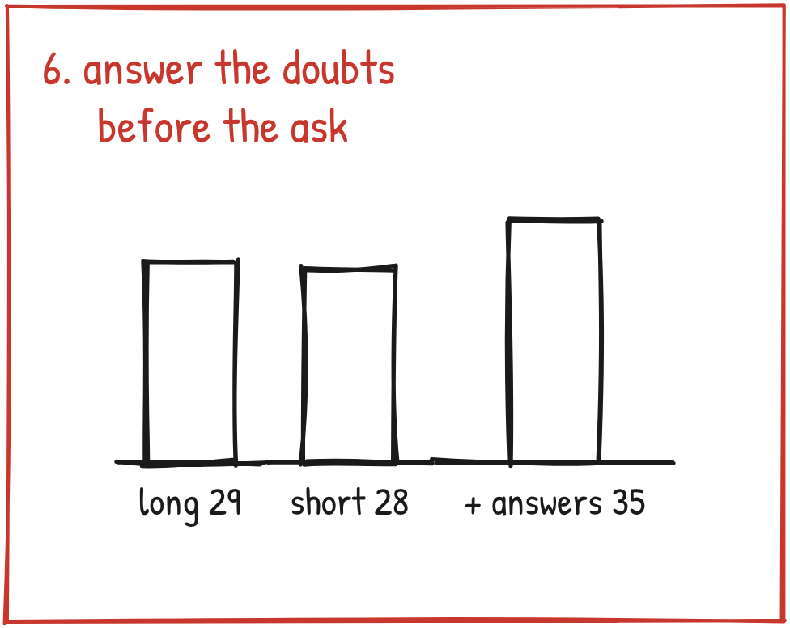
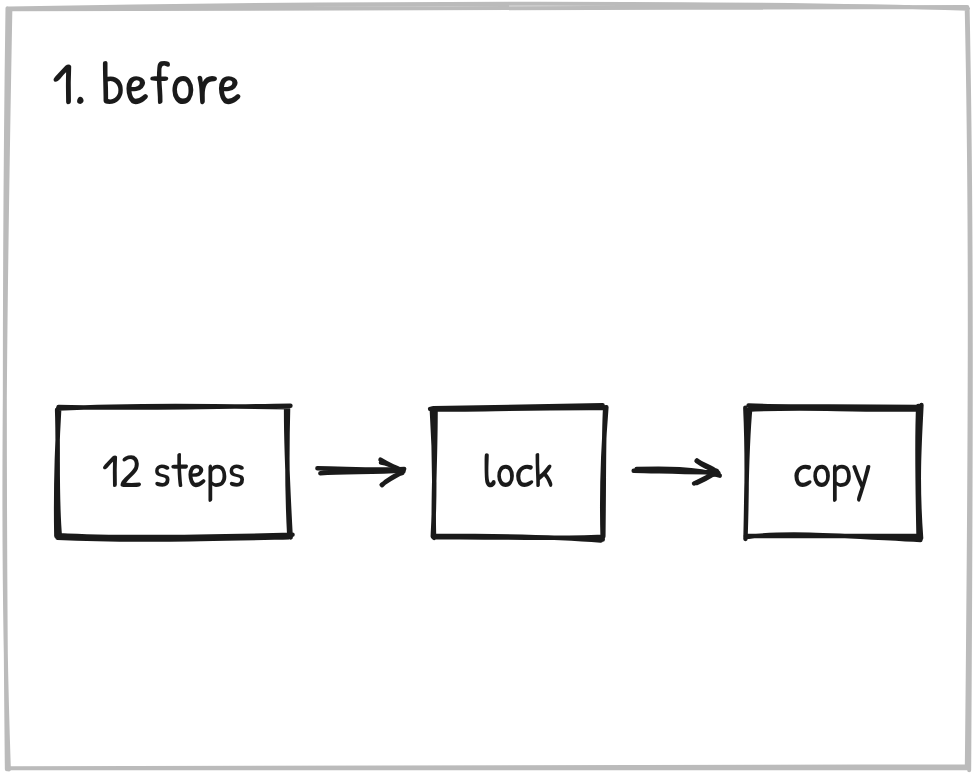
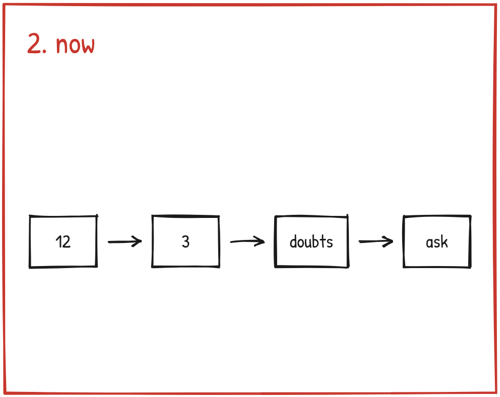
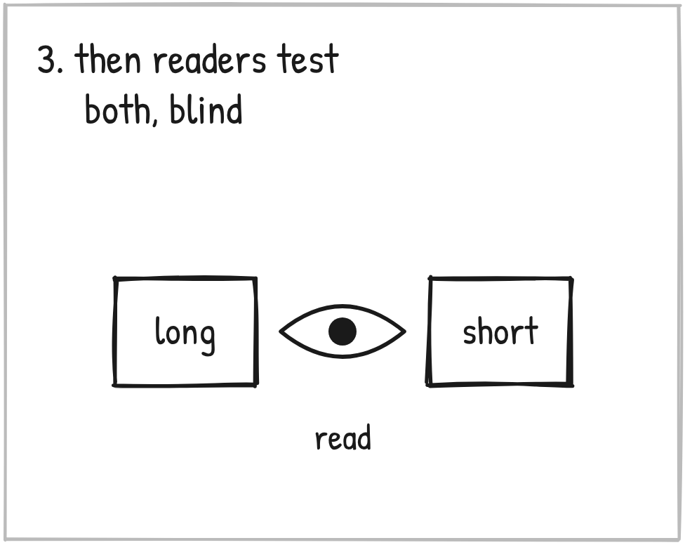

Update, November 13. The next morning I ran this test through Rich Schefren's Hidden Obstacles process. The big line below did not survive it.
The 7 extra buyers came from a test that had planted its own answers. Run again a cleaner way, on 100 simulated owners, answering the doubts before the ask did not beat saying nothing.
What still stands: the short chain didn't lose buyers. What I don't know yet: what belongs right before the ask. A live night settles that.
The story below is what I believed on November 12. I'm leaving it up. The record of the check is right under it.
October 19. I write myself a note.
I've built belief chains for years.
A chain is the road you walk a stranger down. Each belief sets up the next one, until buying feels like their own idea.
I never put a limit on the steps.
Twelve was fine.

Then I ran into a rule from Perry Belcher.
No more than three beliefs. Go past three, and the offer fails.

Put the two together and something clicked.
If every belief a person needs can be squeezed into three, the road gets shorter. And the conclusion lands harder.
That was the whole note. At the bottom I wrote what I'd test, and then two words.
"Nothing yet."
It stayed that way for 24 days.
On November 4, planning the Fishers registration page, I said it out loud: "I really want to focus on the three biggest beliefs that would move the needle."
But I couldn't test it in the real world.
So I said this instead:
"If I can't test it in the real world, I can at least do a simulation. And if the logic plays out for me, then yeah, let's go ahead and start working that way."
So we built the room. A simulation, NOT live sales. I'll say that again at the end.
100 local business owners. The same 100 every time.
Three versions of the same road. The long one. The short one. And the short one with answers to the doubts, right before the ask.
25 AI readers, each playing 20 owners, each seeing only one version. At every belief they could say yes, partly, or no.

The first answer came back fast.
Claude had scored it by rules. Short chain: 31 buyers. Long chain: 14.
Doubled.
But that score treated every belief as a door somebody walks out of. People don't read like that. So we threw it out and ran the readers blind.

Long chain: 29 bought. Short chain: 28.
A tie.
So here's what they actually did. They didn't leave at each belief. They said "partly" and kept walking.
325 times in the long chain. 116 in the short.
And all of that doubt rode along with them to the price.

Then we answered three questions right before the ask. The three someone always asks.
Isn't this just a fad?
My business is fine. What would this even fix?
Is it worth it for a business my size?
35 bought.

And that's the lesson.
A shorter road doesn't sell more. Answering the doubts people CARRY to the price does.
So I changed the skill.
It used to build one long chain and lock it. Now it builds the long chain, squeezes it one move at a time, and writes an answer for every belief it cuts. Then readers walk both versions blind before anything gets locked.
Three is the goal. Never forced.



Now, the honest part.
One run. A prediction, not a result. Runs on a room like this swing by about four buyers, so the gain from the answers is just past that. The short-versus-long difference is well inside it.
And the thing readers named most at the price wasn't in either chain. Proof from a business like theirs.
So that's a belief I hadn't built at all.
But remember this.
A shorter road doesn't sell more. Answering the doubts people carry to the price does.
Mine was twelve steps.
What's yours?
Before you cut one, ask the ones who got all the way to the price what was still in their head. Then answer that first.